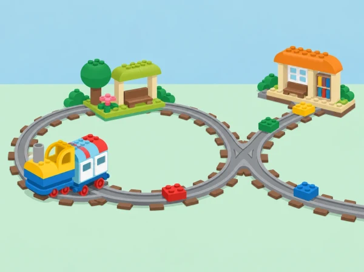

La línia verda: un tren per al barri
🏷️ Medi ambient i sostenibilitat
🌱 Situació, repte i intenció
La situació pren com a referent activitats oficials de Coding Express sobre bucles, bifurcacions i distàncies; la història, el plànol i els criteris de disseny són propis. Abans de començar, reviseu el manual del kit disponible al centre, perquè la configuració i les peces poden variar.
🎯 Aprenentatges i vocabulari
- Construir una via estable que connecte almenys tres estacions i descriure'n el recorregut amb paraules, gestos o pictogrames.
- Anticipar què farà el tren en un tram recte, un bucle o una bifurcació, provar-ho i ajustar la predicció amb evidències.
- Reconéixer que una ruta pot ser més curta i, alhora, menys clara o menys adequada per a la missió triada.
- Coordinar-se en el muntatge, respectar torns i explicar les decisions amb vocabulari espacial: davant, darrere, abans, després, gir i parada.
- Relacionar el transport col·lectiu amb una conversa inicial sobre mobilitat i sostenibilitat, sense simplificar-ne els impactes.
🧰 Materials i preparació
Utilitzeu les vies, el tren i els elements d'acció inclosos en el Coding Express del centre, les targetes de colors del kit, cartolina per al mapa, blocs de construcció per a les estacions i una càrrega lleugera, gran i estable. No inventeu correspondències entre colors i ordres: consulteu la guia del fabricant i deixeu visibles les peces que realment té el kit. Prepareu una zona de muntatge a terra o sobre una taula baixa amb espai per circular sense xafar les vies.
Trieu tres estacions amb pictogrames: horta, mercat i escola. La càrrega pot ser una peça de construcció o una imatge, mai aliment real si això complica higiene o al·lèrgies. Marqueu un punt de partida, una destinació i una pregunta per a cada prova. Feu una revisió de seguretat de peces menudes i delimiteu l'espai de joc segons l'edat.
📅 Seqüència didàctica
Què necessita una línia de tren? (35–40 min)
Fase 1 · Activem i prediem
Observeu imatges o pictogrames d'estacions i penseu què ajuda a saber on som: nom, color, símbol o ordre de les parades. Converseu sobre com s'orienta una persona que arriba per primera vegada.
Fase 2 · Explorem i construïm
En grups, ordeneu les tres estacions —horta, mercat i escola— en una tira de paper i dibuixeu una primera ruta amb fletxes. Uniu vies rectes i corbes senzilles; comproveu que les unions queden fermes i que el tren pot circular sense obstacles al voltant.
Fase 3 · Expliquem i registrem
Assenyaleu amb el dit el camí que espereu que faça el tren abans d'engegar-lo. Marqueu el punt de partida, l'ordre de les parades i la destinació amb dibuix o pictogrames. Un equip explica la seua predicció a un altre.
Fase 4 · Apliquem i millorem
Feu circular el tren en la ruta breu i compareu el recorregut observat amb el mapa. Si alguna unió es mou o la via queda interrompuda, canvieu només eixe tram i torneu a provar.
Fase 5 · Comprovem i reflexionem
Provar, descriure i depurar (35–40 min)
Fase 1 · Activem i prediem
Recupereu el mapa de la sessió anterior i trieu un recorregut curt per comprovar. Abans de posar en marxa el tren buit, cada infant assenyala el tram que creu que podria necessitar revisió i explica o representa per què.
Fase 2 · Explorem i construïm
Una persona posa en marxa el tren seguint el procediment del kit, una altra descriu el trajecte i una tercera observa si s'ha completat. Roteu aquests rols en la prova següent perquè totes les persones puguen participar.
Fase 3 · Expliquem i registrem
Si el tren s'atura o es desvia, reviseu una cosa cada vegada: unió de vies, posició del tram d'acció o orientació de l'element segons el manual. Registreu-ho amb tres dibuixos: «esperàvem», «ha passat» i «canviarem».
Fase 4 · Apliquem i millorem
Canvieu només la peça o la unió triada i torneu a provar. Compareu el resultat amb l'intent anterior; no afegiu moltes peces alhora, perquè seria difícil saber quina modificació ha produït l'efecte.
Fase 5 · Comprovem i reflexionem
Bucle i bifurcació (35–40 min)
Fase 1 · Activem i prediem
Presenteu dues opcions de disseny: una ruta amb bucle i una amb bifurcació, si el material real ho permet. Pregunteu: «Tornarà el tren al mateix lloc? Quines opcions veiem? On pot parar?».
Fase 2 · Explorem i construïm
Marqueu les rutes amb fletxes grans i munteu primer la que es puga construir amb seguretat amb les peces disponibles. Si el kit no permet alguna configuració, representeu-la amb una via dibuixada o una fitxa que es mou sobre el mapa: no forceu el mecanisme.
Fase 3 · Expliquem i registrem
Abans de la prova, cada equip explica què espera que passe en el bucle o en arribar a la bifurcació. Un altre grup segueix les fletxes i assenyala el punt on el tren hauria de tornar o triar camí.
Fase 4 · Apliquem i millorem
Proveu la ruta possible i compareu l'observació amb la predicció. Reviseu les fletxes o el muntatge si la representació no deixa clar el recorregut; manteniu la idea de la segona ruta com a simulació si falta material.
Fase 5 · Comprovem i reflexionem
La línia verda i la càrrega (35–40 min)
Fase 1 · Activem i prediem
Recupereu els mapes i trieu quin trajecte completarà la missió horta–mercat–escola. Predigueu quin criteri farà més entenedora la ruta per a una persona que no coneix la maqueta.
Fase 2 · Explorem i construïm
Compareu dues opcions amb criteris visibles: nombre de trams, quantitat de parades i facilitat d'explicar l'ordre. Dibuixeu cada opció o prepareu les vies si hi ha prou peces.
Fase 3 · Expliquem i registrem
Col·loqueu una càrrega lleugera, gran i estable. Repetiu la prova i registreu si es manté al seu lloc i si el tren completa les parades. Distingiu què heu observat d'allò que encara és una hipòtesi sobre una ruta real.
Fase 4 · Apliquem i millorem
Si la càrrega cau, observeu si el suport està centrat i si la via o el tren vibren; simplifiqueu la càrrega i torneu a provar. Canvieu només un aspecte per poder explicar quin ajust ha ajudat.
Fase 5 · Comprovem i reflexionem
🧪 Evidències i avaluació
- Mapa amb les tres estacions, l'ordre de la ruta i un símbol per indicar el punt de partida.
- Registre de predicció i resultat d'una prova, amb una modificació justificada.
- Observació de la coordinació: escolta, torns, cura del material i participació en una decisió comuna.
- Explicació oral, gestual o visual d'un bucle o d'una bifurcació observada.
- Presentació final que diu quin criteri va guiar el recorregut i quina limitació té la maqueta.
Durant les proves, feu preguntes breus: «Què penseu que passarà?», «Què ha canviat?», «Quina part podem revisar?» i «Com ho explicaries a algú que no veu el tren?». Valoreu el procés de raonament i revisió, no que el tren complete la ruta a la primera.
♿ Participació, accessibilitat i seguretat
Distribuïu els rols de constructor/a, guia del mapa, encarregat/da de la prova i narrador/a. Els rols roten entre sessions. Es pot participar sense manipular el tren: assenyalar el mapa, fer la predicció, col·locar una targeta, descriure el resultat o comprovar si s'han respectat els torns. Acordeu com demanar una pausa abans de tocar la maqueta d'un altre equip.
Inclusió, diferenciació i continuïtat
Reduïu el nombre d'estacions o oferiu un mapa amb pictogrames si cal; amplieu el repte amb dues rutes alternatives o amb instruccions per a un grup nou. Feu servir fletxes grans, codis de forma a més de color i una demostració visual pas a pas. Per a alumnat que preferisca un rol observador, doneu-li una graella amb els moments de parada i els resultats.
Les aportacions de cada infant es poden recollir amb una foto del mapa, un àudio breu o una frase dictada.
🔗 Referents i adaptació
Compareu el plànol de la maqueta amb un mapa senzill del barri: tots dos representen llocs, però no mostren totes les característiques del trajecte. Parleu de distància, freqüència, accessibilitat i necessitats diferents sense decidir que una única ruta és la millor per a tothom. Les activitats oficials de LEGO Education ofereixen referents per treballar bucles, rutes amb bifurcació i comparació de distàncies; aquesta situació crea un context propi per connectar eixes idees amb les estacions del barri.